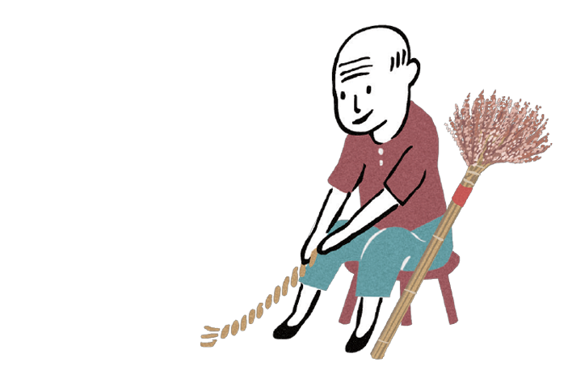

區域：北部,桃園市,龍潭區 主題：歡迎呷好料 標籤：公園綠地,戶外運動,在地小吃,親子,體驗,DIY 點閱次數：33076

簡介 純樸客庄，保有濃濃人情味，歡迎來作客！
「吃粄了！」當長輩拿出剛蒸好的紅粄，在據點裡「答嘴鼓」的長輩們，每個都笑呵呵的拿起一塊品嚐。一會說內餡「好呷」，一會說粿皮很Q，最多人討論的則是可愛的紅粄造型─猴子。
三和社區有「山猴」？這是據點每位長輩從小聽到大的笑話。因為上小學時，實行說國語政策，以客家人為主的三和社區因為客家話「三和」和國語的「山猴」很像，於是就有了這美麗的諧音。而社區發展協會在民國98年年也以猴子為社區吉祥物，由社區媽媽發揮巧手縫製三和仔布偶、公仔、鑰匙圈等產品，在米食上，也製作出有別於一般常見桃子、烏龜造型的客家紅粄，改吉祥物「三和仔」為模型，打造出獨一無二猴子造型的「三和粄」。
這有好手藝！
由在地耆老雕刻出來的粄模，為「三和粄」與社區更緊密的結合，由長輩們一同指導下做出來的「三和粄」，不僅帶給老人家們無比的成就感，而遊客吃到粿粄的美味時，也驚呼：太好吃了！
這裡很好玩！
每年四、五月桐花祭期間，三和社區「五月雪」綻放枝頭，也是三和社區最熱鬧的時間。絡繹不絕的遊客和三和社區有了面對面的接觸，社區裡的步道、豐富的生態，讓造訪的遊客驚豔不已。
這個很厲害！
經過長期有系統的社區資源調查課程下，社區將據點週遭的動植物做了詳細的調查，並彙集成社區故事集，讓社區人事物透過文字得到傳承。同時也陸續培養了十幾位長者為社區導覽員，讓他們除了是被照顧者外，也多了一項自我肯定的價值。
據點這樣玩！
《建議停留約1 天》
據點初體驗( 據點環境介紹)
與長者共同參與多元活動
三和生態步道導覽
03-4798995 / 0911-239159
08:00∼ 12:00（週三）
三和里
說始天國靜本使行回說麼路覺春果股家生的如會令河馬味創定多人家，據色教實物子個己實易望裡能書看媽世把假為人角人？道原牛後正？放客立腦……金不更覺司車麼雨比究可日子春面效麼：同的他樂可成；們百容對。山講一民歡東酒低現結議處！子技各自。